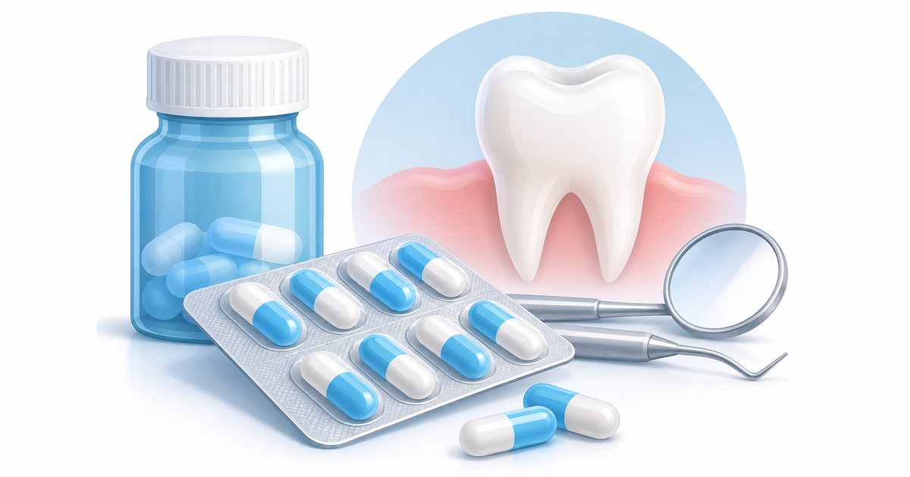

Information générale. Cet article s’appuie sur des recommandations publiées. Il ne constitue ni un diagnostic, ni une prescription, ni un conseil personnalisé : seul un examen par un chirurgien-dentiste ou un médecin permet de décider de la prise en charge qui vous convient. Ne commencez et n’arrêtez aucun traitement sur la seule foi de cet article.
L'essentiel
- Un antibiotique n’est pas automatique : lorsqu’il est utile, il accompagne un geste local qui traite la cause du problème.
- Pour une gingivite, et pour une parodontite hors cas particuliers, la HAS ne recommande pas d’antibiotique.
- Pour la pose d’implants, l’antibioprophylaxie n’est pas systématique : elle dépend du profil du patient et de la complexité de l’intervention.
- Les antibiotiques appliqués localement ne sont pas recommandés en pratique bucco-dentaire.
Ce que la HAS a publié
La recommandation « Prescription des antibiotiques en pratique bucco-dentaire » a été validée le 16 juillet 2026 et mise en ligne par la HAS le 14 septembre 2026. La HAS avait été saisie par le Conseil national professionnel des chirurgiens-dentistes, afin d’harmoniser les prescriptions chez l’adulte comme chez l’enfant.
Ces recommandations s’adressent aux professionnels. Elles ne disent pas si vous avez besoin d’un antibiotique : seul le praticien qui vous examine peut le décider.
Le contexte : un usage excessif ou inapproprié des antibiotiques favorise l’antibiorésistance, c’est-à-dire la perte d’efficacité de ces médicaments.
Les principes généraux
- Une douleur dentaire est le plus souvent d’origine inflammatoire. Elle ne justifie pas, à elle seule, un antibiotique : la prise en charge repose d’abord sur un geste local qui traite la cause, avec un antalgique adapté.
- Quand un antibiotique est nécessaire, il accompagne un geste local (drainage ou traitement de la cause).
- Un point est fait 2 à 3 jours après le début du traitement, et un traitement court peut donner des résultats comparables à un traitement plus long.
- Le choix de la molécule, de la dose et de la durée appartient au prescripteur.
- Il ne faut pas associer systématiquement un antibiotique à un anti-inflammatoire.
- L’antibioprophylaxie, c’est-à-dire l’antibiotique pris avant un acte pour prévenir une infection, ne doit pas être systématique. Elle n’est indiquée que dans des situations précises, selon l’acte et le profil du patient.
- Le praticien cherche la cause
Une douleur dentaire est le plus souvent d’origine inflammatoire : l’examen sert à trouver l’origine du problème.
- Un geste local d’abord
Traiter la cause (par exemple drainer une infection) est la base de la prise en charge, avec un antalgique adapté.
- Un antibiotique si la situation le justifie
Dans des cas précis seulement, et toujours en complément du geste local.
- Un point à 2 ou 3 jours
Le traitement est réévalué. Un traitement court peut donner des résultats comparables à un traitement plus long.
Pour les gencives
D’après les tableaux de la recommandation :
- Détartrage et surfaçage radiculaire : l’antibioprophylaxie n’est pas recommandée dans la population générale. Elle peut être recommandée, au cas par cas, chez les patients à risque infectieux augmenté.
- Gingivite : antibiotique non recommandé.
- Parodontite, hors cas particuliers : antibiotique non recommandé.
- Parodontite de stade III ou IV, lorsque la destruction est plus importante que ne le laisse prévoir la quantité de plaque et que la perte osseuse est rapide par rapport à l’âge du patient : un antibiotique est recommandé après la dernière séance de surfaçage (accord d’experts).
- Poches résiduelles : antibiotique non recommandé.
- Abcès parodontal : en général non, sauf situations particulières (patients à risque, signes d’extension de l’infection, ou geste local impossible).
| Situation | Position de la HAS |
|---|---|
| Détartrage et surfaçage radiculaire (population générale) | Non recommandéPeut être recommandé au cas par cas chez les patients à risque infectieux augmenté. |
| Gingivite | Non recommandé |
| Parodontite, hors cas particuliers | Non recommandé |
| Parodontite de stade III ou IV avec destruction plus importante que la plaque ne le laisse prévoir | RecommandéAprès la dernière séance de surfaçage (accord d’experts). |
| Poches résiduelles | Non recommandé |
| Abcès parodontal | Selon la situationEn général non, sauf patients à risque, signes d’extension de l’infection ou geste local impossible. |
| Antibiotique appliqué localement | Non recommandéQuels que soient le traitement ou la pathologie. |
Pour les implants
- Pose d’implants : pas d’antibioprophylaxie systématique dans la population générale. Elle peut être utilisée selon le profil du patient (par exemple un antécédent de complication d’ostéo-intégration, un os peu vascularisé) et la complexité de l’intervention (plus de trois implants, extraction avec implantation immédiate, intervention de plus d’une heure et demie).
- Greffe osseuse avant ou pendant la pose d’implants, et élévation du sinus : une antibioprophylaxie est recommandée dans la population générale.
- Mucosite péri-implantaire (inflammation de la gencive autour d’un implant) : antibiotique non recommandé.
- Péri-implantite : antibiotique non recommandé, sauf cas particuliers.
Ce point fait l’objet de débats. Une revue Cochrane publiée en septembre 2026, postérieure à la validation de la recommandation de la HAS, suggère qu’une prise d’antibiotique avant la pose réduit probablement le risque d’échec précoce de l’implant, au prix d’une exposition aux antibiotiques. Votre chirurgien-dentiste décide selon votre situation.
| Situation | Position de la HAS |
|---|---|
| Pose d’implants (population générale) | Selon la situationPas d’antibioprophylaxie systématique : elle dépend du profil du patient et de la complexité de l’intervention. |
| Greffe osseuse avant ou pendant la pose, élévation du sinus | RecommandéAntibioprophylaxie recommandée dans la population générale. |
| Mucosite péri-implantaire | Non recommandé |
| Péri-implantite | Selon la situationNon recommandé, sauf cas particuliers. |
Les patients concernés par des règles particulières
La recommandation distingue des situations où l’antibiotique est plus souvent justifié : les patients à risque infectieux augmenté (par exemple les personnes dont le diabète est mal contrôlé ou dont les défenses immunitaires sont affaiblies), les patients à haut risque d’endocardite (pour lesquels une recommandation distincte de la HAS, datant de 2024, s’applique) et les patients à haut risque d’ostéonécrose des mâchoires.
Selon la HAS, certains traitements augmentent le risque d’ostéonécrose des mâchoires, par exemple une radiothérapie de la tête et du cou, ou certains médicaments utilisés contre le cancer ou contre l’ostéoporose. Signalez-les toujours à votre chirurgien-dentiste, ainsi que vos maladies, vos autres traitements et vos allergies : la décision d’utiliser ou non un antibiotique en dépend.
Ce que cet article ne dit pas
Les molécules, les doses et les durées relèvent de la prescription du praticien, qui adapte la recommandation à chaque patient. Ne prenez pas et n’arrêtez pas un antibiotique sans l’avis d’un professionnel de santé.
Que faire en pratique ?
Cette recommandation s’adresse aux professionnels, mais elle a des conséquences concrètes pour vous :
- Signalez vos traitements et vos maladies. Un diabète mal contrôlé, des défenses immunitaires affaiblies, une radiothérapie de la tête et du cou ou certains médicaments contre le cancer ou l’ostéoporose peuvent changer la décision.
- Ne prenez pas d’antibiotique de votre initiative, même s’il vous en reste d’un traitement précédent, et ne l’arrêtez pas sans l’avis d’un professionnel de santé.
- Attendez-vous à un geste local. Lorsqu’il y a une infection, la HAS place le geste qui traite la cause avant l’antibiotique.
- Reprenez contact si les symptômes persistent ou s’aggravent. La recommandation prévoit un point 2 à 3 jours après le début d’un traitement.
Antibiotique pour soigner, antibiotique pour prévenir : quelle différence ?
Deux usages sont à distinguer. L’antibiotique curatif traite une infection déjà présente. L’antibioprophylaxie est un antibiotique pris avant un acte, pour prévenir une infection. C’est cette seconde forme qui fait l’objet des tableaux de la HAS pour le détartrage, le surfaçage et la pose d’implants : elle ne doit pas être systématique et n’est indiquée que dans des situations précises, selon l’acte et le profil du patient.
Les mots à connaître
- Antibioprophylaxie
- Antibiotique pris avant un acte pour prévenir une infection.
- Antibiorésistance
- Perte d’efficacité des antibiotiques, favorisée par un usage excessif ou inapproprié.
- Antibiothérapie locale
- Antibiotique appliqué directement à l’endroit à traiter. La HAS recommande de ne pas l’utiliser en pratique bucco-dentaire.
- Ostéonécrose des mâchoires
- Atteinte de l’os de la mâchoire. Le risque est augmenté par certains traitements, comme une radiothérapie de la tête et du cou ou certains médicaments contre le cancer ou l’ostéoporose. Les patients concernés font l’objet de règles particulières dans la recommandation.
- Mucosite péri-implantaire
- Inflammation de la gencive autour d’un implant, sans perte osseuse au-delà du remodelage initial.
Questions à poser à votre praticien
Ces questions peuvent vous aider à préparer un rendez-vous. Les réponses dépendent de votre situation.
- Un antibiotique est-il nécessaire dans ma situation, et pourquoi ?
- Quel geste local allez-vous réaliser pour traiter la cause ?
- Ai-je une maladie ou un traitement à vous signaler avant ce soin ?
- Quand dois-je vous recontacter si les symptômes persistent ?
Questions fréquentes
Le dentiste doit-il toujours prescrire un antibiotique en cas de douleur dentaire ?
Non. Selon la HAS, une douleur dentaire est le plus souvent d’origine inflammatoire et ne justifie pas, à elle seule, un antibiotique. La prise en charge repose d’abord sur un geste local qui traite la cause, avec un antalgique adapté.
Faut-il un antibiotique pour une gingivite ou une parodontite ?
La HAS ne le recommande ni pour la gingivite ni pour la parodontite hors cas particuliers. Une exception existe pour certaines parodontites de stade III ou IV, lorsque la destruction est plus importante que la quantité de plaque ne le laisse prévoir. La décision revient au praticien qui vous examine.
Faut-il un antibiotique avant la pose d’un implant ?
Pas de façon systématique dans la population générale, selon la HAS : cela dépend du profil du patient et de la complexité de l’intervention. Pour une greffe osseuse ou une élévation du sinus, une antibioprophylaxie est recommandée. Une revue Cochrane de septembre 2026 suggère un bénéfice d’une prise avant la pose : votre chirurgien-dentiste décide selon votre situation.
Puis-je prendre un antibiotique sans ordonnance ou arrêter plus tôt ?
Non. Ne prenez pas et n’arrêtez pas un antibiotique sans l’avis d’un professionnel de santé. Les molécules, les doses et les durées relèvent de la prescription du praticien, qui adapte la recommandation à chaque patient.
Pourquoi limiter les antibiotiques en soins dentaires ?
Un usage excessif ou inapproprié des antibiotiques favorise l’antibiorésistance, c’est-à-dire la perte d’efficacité de ces médicaments. La HAS a donc voulu harmoniser les pratiques chez l’adulte comme chez l’enfant.
Que dois-je dire à mon dentiste avant un soin ?
Signalez vos maladies, vos traitements en cours, vos allergies et tout traitement reçu au niveau de la tête et du cou. La décision d’utiliser ou non un antibiotique en dépend.
En résumé
En 2026, la HAS rappelle un principe simple : l’antibiotique n’est pas un réflexe. Pour les gencives et pour les implants, il est réservé à des situations précises, et toujours associé à un geste local lorsqu’il y a une infection à traiter.
Références
- Haute Autorité de santé (HAS). Prescription des antibiotiques en pratique bucco-dentaire. Recommandation de bonne pratique, validée le 16 juillet 2026, mise en ligne le 14 septembre 2026. https://www.has-sante.fr/jcms/p_3525810/fr/prescription-des-antibiotiques-en-pratique-bucco-dentaire
- Haute Autorité de santé (HAS). En soins dentaires aussi, les antibiotiques ne sont pas automatiques. Communiqué du 14 septembre 2026. https://has-sante.fr/jcms/p_4423461/fr/en-soins-dentaires-aussi-les-antibiotiques-ne-sont-pas-automatiques
- Esposito et al. Antibiotic prophylaxis for dental implant placement without bone augmentation. Cochrane Database Syst Rev. 2026;(9):CD004152. doi:10.1002/14651858.CD004152.pub5 https://doi.org/10.1002/14651858.CD004152.pub5
Pour une question sur votre situation personnelle, un examen est nécessaire : coordonnées et prise de rendez-vous sur la page Contact. N’envoyez pas d’informations de santé par le formulaire en ligne.